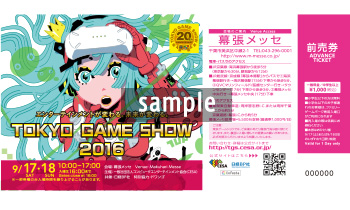
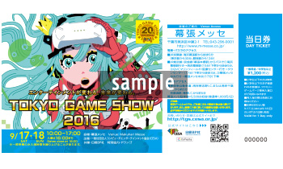
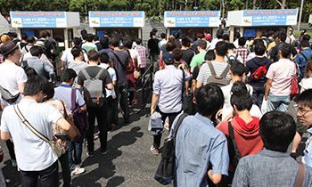
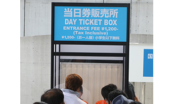

初めてのTGS ～ 一般公開日編 ～

TGS2014、TGS2015の写真を参考に会場の様子や雰囲気を事前に把握しておきましょう。ただしTGS2016は、必ずしも同じではありませんので写真はイメージとしてご覧ください。
入場チケットについて
入場チケットの種類
東京ゲームショウ2016の一般公開日に入場するためのチケットには、当日会場でお買い求めいただける「当日券 」（中学生以上1,200円・税込）のほか、「前売券 」（中学生以上1,000円・税込）と、特典付きの限定チケット「TGS2016サポーターズクラブチケット 」（3,000円・税込）があります。

「前売券」（1,000円・税込/中学生以上）

「当日券」（1,200円・税込/中学生以上）
「前売券」は9月16日（一般公開日の前日）まで販売します。全国の主要プレイガイド、コンビニのほか、一部の書店やゲームショップ、複合カフェなどで、ご購入いただけます。(詳しくはコチラ )
「TGS2016サポーターズクラブチケット」は、販売が終了しています。
なお「当日券」は、JR京葉線「海浜幕張」駅始発時刻に合わせて販売を開始します。1-8ホール側および9-11ホール側の手荷物検査場手前などにある当日券販売所にてお買い求めください。


東京ゲームショウでは、ご来場にあたり、徹夜行為は一切禁止していますので、お守りいただけない方は入場をお断りします。